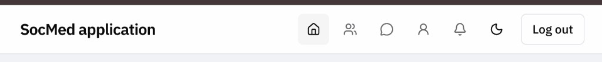

Navbar Arrangement — Full-Width Zones + Profile Menu
Status
Completed
Plan Folder
plans/07292026-19-navbar-arrangement
Size
Small (4 tasks, frontend-only)
Risk
Level 2
Planning branch
plan/07292026-19-navbar-arrangement
Execution branch
kylie/navbar-arrangement
Depends on
Plan 10 theme toggle · Plan 16/17 shell badges (Messages, Notifications, Feed)
Why
The signed-in header is a single right-hand icon cluster inside the same max-w-[680px] column as the feed. Brand, primary destinations, messaging, notifications, theme, and logout all compete in one cramped row. Users want a clearer chrome: primary browse links centered, account/actions on the right, and theme + logout tucked behind a profile menu.

Current header (before) — everything shares the narrow content column.
What
Rearrange AppShell into a full-width sticky header with three inline zones, and replace the standalone theme toggle + Log out button (when signed in) with a Profile dropdown.
Theme — frontend/src/components/ThemeToggle.tsx + ThemeContext. Menu item should call the same toggleTheme / labels; do not invent a second theme path. Prefer adapting ThemeToggle (e.g. optional render-as menu item) or a thin wrapper used only inside the dropdown — one behavior, two surfaces.
UI kit today — button, input, textarea only. No dropdown yet. Closest analog for a new primitive: existing shadcn-style frontend/src/components/ui/button.tsx (CVA + Radix Slot).
Consumers — App.tsx wraps all authenticated/app routes in AppShell. Blast radius is every page chrome, not page bodies.
Labels — Keep accessible names: Home/Feed (existing aria-label="Feed" on Home is fine — do not rename routes). User-facing request said “home page / friends page”; icons stay icon-only with aria-label / title.
Constraints
Must
Full-width header; three zones on one row (inline)
Center: Home + Friends only when signed in
Right: Messages · Notifications · Profile dropdown when signed in
Dropdown: Profile · Switch mode · Log out
Preserve unread/feed/notification badges and polling behavior
Keyboard: open/close menu, Escape, focus return to trigger
Update plans/README.md with seq 19
Must not
Change routes, APIs, or badge count endpoints
Widen main content beyond existing max-width
Leave a duplicate theme toggle or Log out in the signed-in header row
Build a one-off non-Radix menu when Decision 3 locked A
Mix drive-by refactors outside the shell/menu surface
Out of scope
Mobile hamburger / bottom tab bar
Avatar photo in the profile trigger (keep UserRound icon)
Notification dropdown panel (bell still navigates to /notifications)
Renaming the product title string
Backend / migrations
Risk
Level 2 — Concern. Global chrome change + first dropdown dependency.
Risk
Mitigation
Absolute centering overlaps brand or right cluster on narrow viewports
Use a CSS grid 1fr auto 1fr (or equivalent) with side zones; allow center to shrink/wrap with gap; spot-check ~375px width. Do not introduce a hamburger in this plan.
Profile path regresses (was a direct NavLink)
First dropdown item is an explicit Profile link to the same URL; acceptance covers click-through.
New Radix dependency drift / inconsistent styling
Add via shadcn-style ui/dropdown-menu.tsx matching existing token/button patterns; no parallel menu APIs.
Theme toggle behavior forks
Reuse useTheme / existing persistence; menu item must flip html.dark + localStorage like today’s button.
Required pushback: Do not keep the header at max-w-[680px] and call Home/Friends “centered” — that was rejected (Decision 1A). Do not ship Profile-as-menu without a Profile menu item (Decision 2A).
Tasks
T1 — Add DropdownMenu UI primitive
Do: Add shadcn-style frontend/src/components/ui/dropdown-menu.tsx backed by @radix-ui/react-dropdown-menu. Wire package dependency in frontend/package.json (and lockfile). Match existing B&W token styling (border, popover surface, focus ring).
Verify: Module typechecks; exports Trigger / Content / Item (names per shadcn convention) usable from AppShell.
T2 — Full-width three-zone AppShell header
Do: Lift the header inner container off the content max-width. Implement left (brand) · center (Home, Friends when signed in) · right (auth-dependent cluster). Keep main at max-w-[680px]. Preserve NavIcon, badges, and message unread polling.
Files:frontend/src/components/AppShell.tsx
Depends on: — (can parallel with T1)
Verify: At desktop width, Home/Friends sit in the visual center of the viewport; brand left; right cluster right-aligned.
Verify: Menu opens/closes; Profile navigates; Switch mode flips theme + persistence; Log out signs out; no duplicate theme/logout controls in the signed-in row.
T4 — Signed-out cluster + plan index
Do: Confirm signed-out right cluster remains ThemeToggle + Sign in. Index this plan in plans/README.md as seq 19.